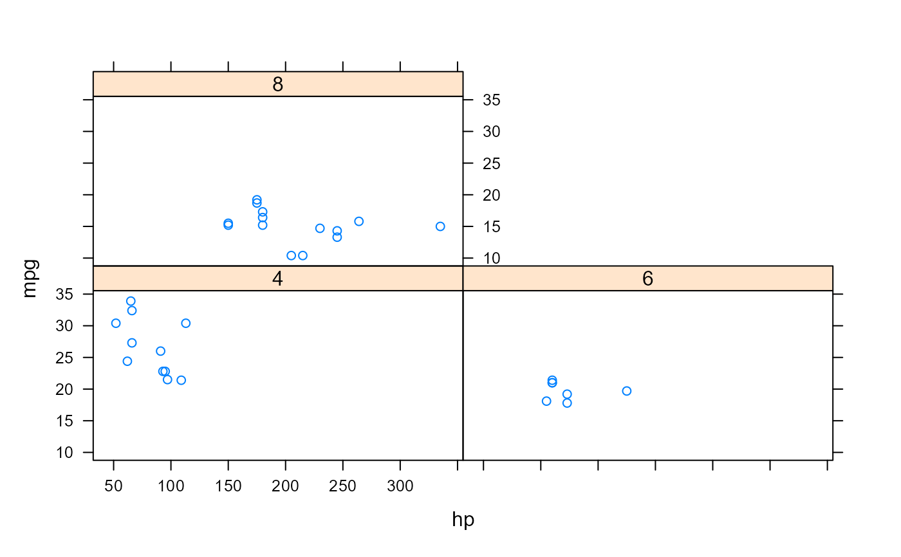
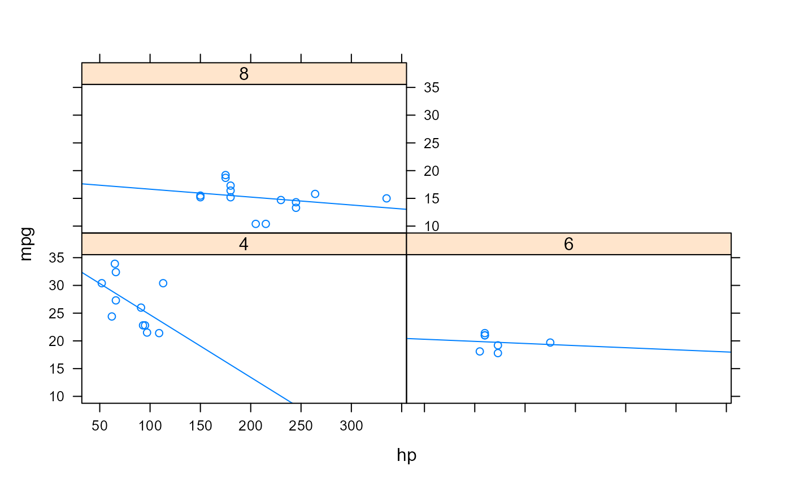
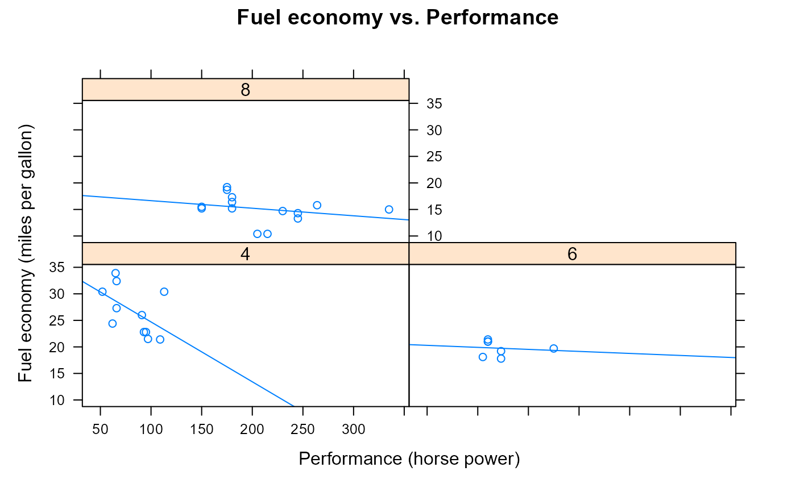
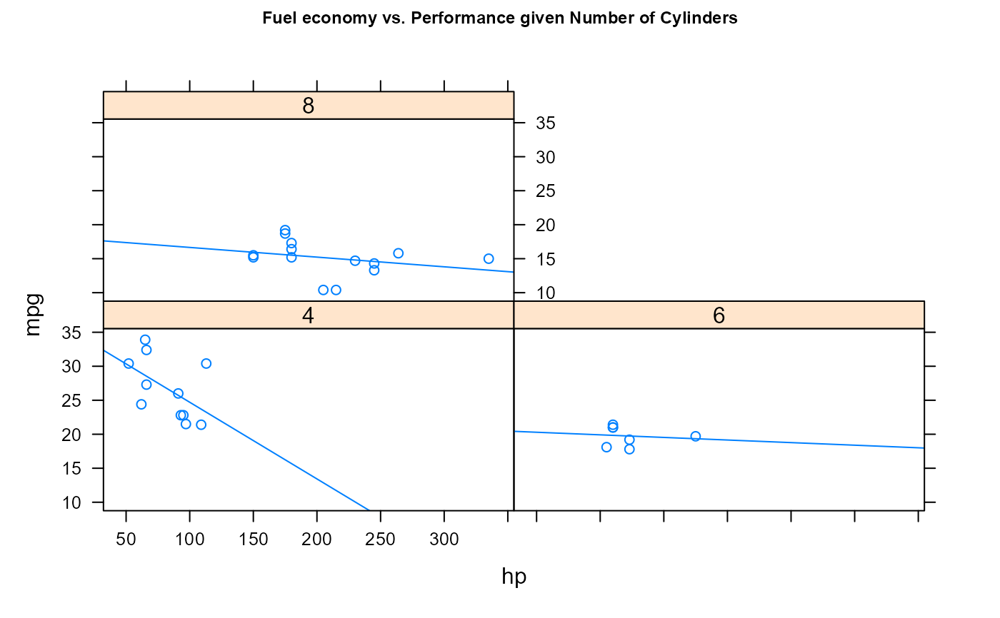
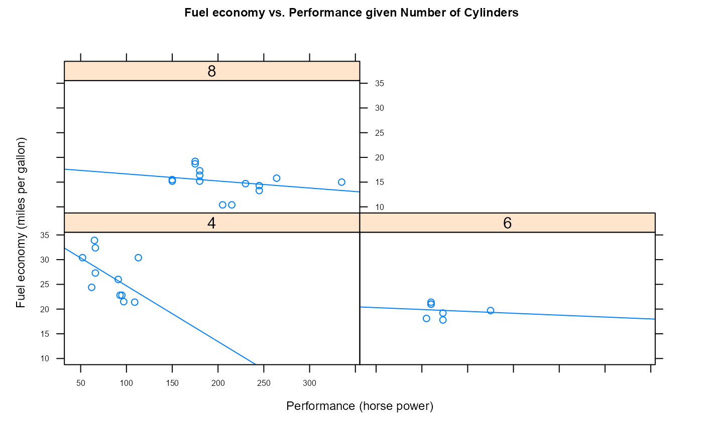
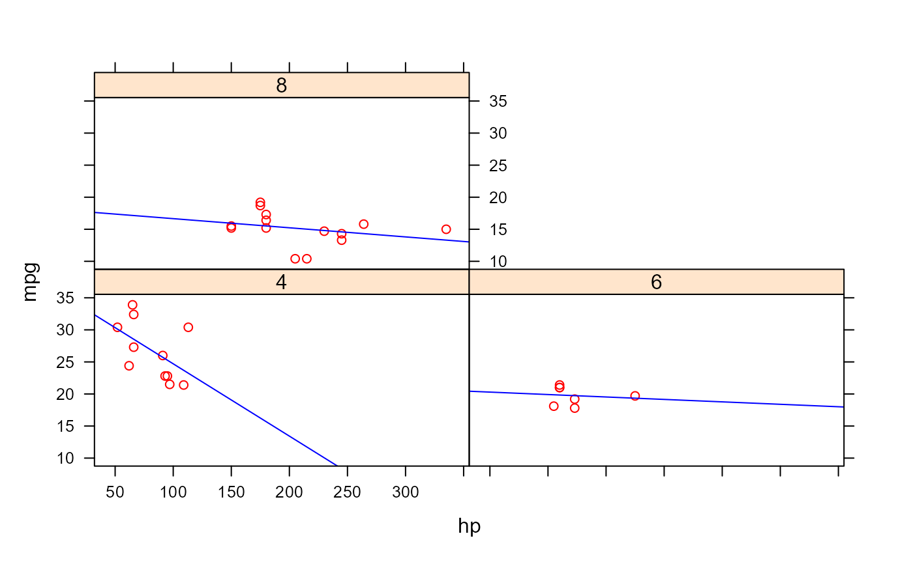
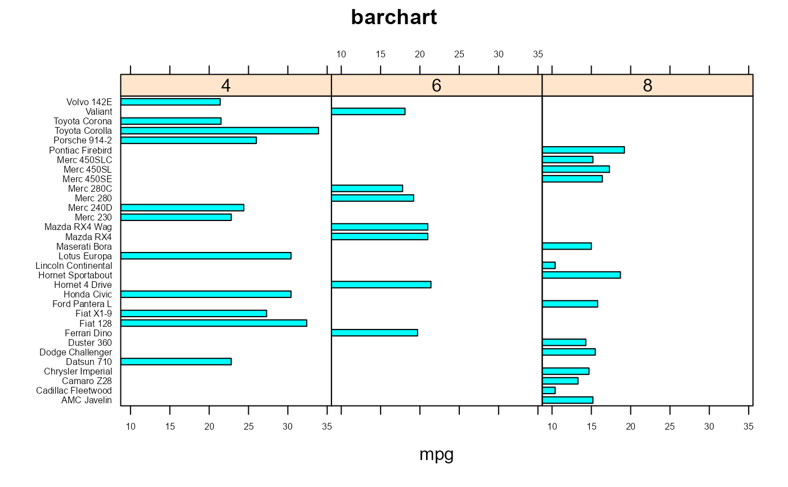
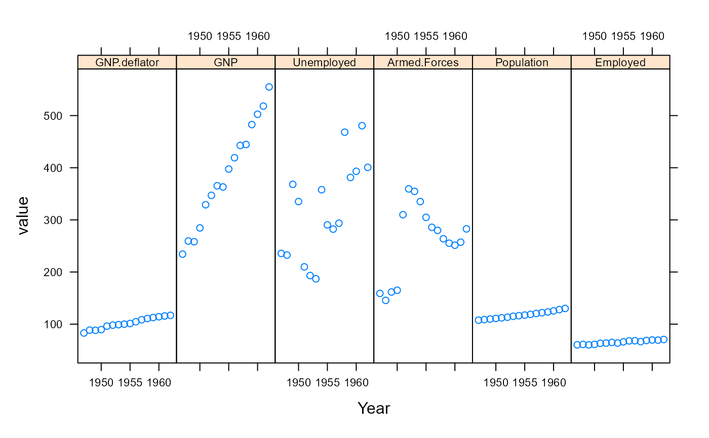
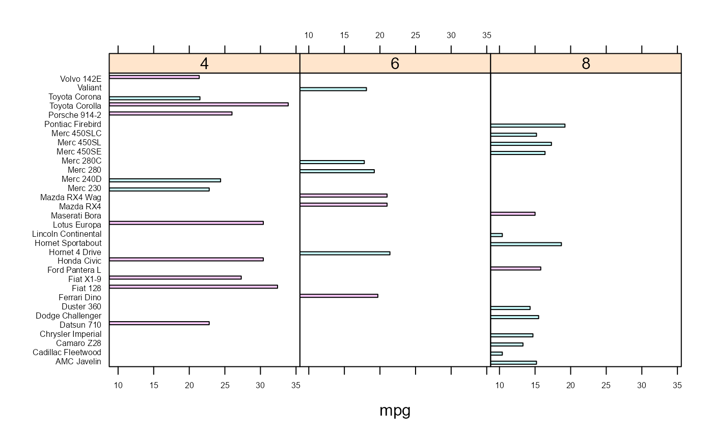

Print examples of chapter 17 of 'R for Dummies'.
ch17.RdTo print a listing of all examples of a chapter, use ch17().
To run all the examples of ch17(), use example(ch17).
ch17()
See also
toc
Other Chapters: ch01, ch02,
ch03, ch04,
ch05, ch06,
ch07, ch08,
ch09, ch10,
ch11, ch12,
ch13, ch14,
ch15, ch16,
ch18, ch19,
ch20
Examples
#> 'data.frame': 32 obs. of 11 variables: #> $ mpg : num 21 21 22.8 21.4 18.7 18.1 14.3 24.4 22.8 19.2 ... #> $ cyl : num 6 6 4 6 8 6 8 4 4 6 ... #> $ disp: num 160 160 108 258 360 ... #> $ hp : num 110 110 93 110 175 105 245 62 95 123 ... #> $ drat: num 3.9 3.9 3.85 3.08 3.15 2.76 3.21 3.69 3.92 3.92 ... #> $ wt : num 2.62 2.88 2.32 3.21 3.44 ... #> $ qsec: num 16.5 17 18.6 19.4 17 ... #> $ vs : num 0 0 1 1 0 1 0 1 1 1 ... #> $ am : num 1 1 1 0 0 0 0 0 0 0 ... #> $ gear: num 4 4 4 3 3 3 3 4 4 4 ... #> $ carb: num 4 4 1 1 2 1 4 2 2 4 ...## Loading the lattice package library("lattice") ## Making a lattice scatterplot xyplot(mpg ~ hp | factor(cyl), data=mtcars)# Changing Plot Options ## Adding titles and labels xyplot(mpg ~ hp | factor(cyl), data=mtcars, type=c("p", "r"), main="Fuel economy vs. Performance", xlab="Performance (horse power)", ylab="Fuel economy (miles per gallon)", )xyplot(mpg ~ hp | factor(cyl), data=mtcars, type=c("p", "r"), main=list( label="Fuel economy vs. Performance given Number of Cylinders", cex=0.75) )## Changing the font size of titles and labels xyplot(mpg ~ hp | factor(cyl), data=mtcars, type=c("p", "r"), main=list( label="Fuel economy vs. Performance given Number of Cylinders", cex=0.75), xlab=list( label="Performance (horse power)", cex=0.75), ylab=list( label="Fuel economy (miles per gallon)", cex=0.75), scales=list(cex=0.5) )## Using themes to modify plot options xyplot(mpg ~ hp | factor(cyl), data=mtcars, type=c("p", "r"), par.settings=simpleTheme(col="red", col.line="blue") )# Plotting Different Types ## Making a bar chart mtcars$cars <- rownames(mtcars) barchart(cars ~ mpg | factor(cyl), data=mtcars, main="barchart", scales=list(cex=0.5), layout=c(3, 1) )#> 'data.frame': 16 obs. of 7 variables: #> $ GNP.deflator: num 83 88.5 88.2 89.5 96.2 ... #> $ GNP : num 234 259 258 285 329 ... #> $ Unemployed : num 236 232 368 335 210 ... #> $ Armed.Forces: num 159 146 162 165 310 ... #> $ Population : num 108 109 110 111 112 ... #> $ Year : int 1947 1948 1949 1950 1951 1952 1953 1954 1955 1956 ... #> $ Employed : num 60.3 61.1 60.2 61.2 63.2 ...#> 'data.frame': 96 obs. of 3 variables: #> $ Year : int 1947 1948 1949 1950 1951 1952 1953 1954 1955 1956 ... #> $ variable: Factor w/ 6 levels "GNP.deflator",..: 1 1 1 1 1 1 1 1 1 1 ... #> $ value : num 83 88.5 88.2 89.5 96.2 ...xyplot(value ~ Year | variable, data=mlongley, layout=c(6, 1), par.strip.text=list(cex=0.7), scales=list(cex=0.7) )## Creating a chart with groups mtcars$cars <- rownames(mtcars) mtcars$am <- with(mtcars, ifelse(am==0, "Automatic", "Manual")) barchart(cars ~ mpg | factor(cyl), data=mtcars, group=am, scales=list(cex=0.5), layout=c(3, 1), )## Adding a key barchart(cars ~ mpg | factor(cyl), data=mtcars, main="barchart with groups", group=am, auto.key=TRUE, par.settings = simpleTheme(col=c("grey80", "grey20")), scales=list(cex=0.5), layout=c(3, 1) )# Printing and Saving a Lattice Plot ## Assigning a lattice plot to an object my.plot <- xyplot(mpg ~ hp | cyl, data=mtcars) class(my.plot)#> [1] "trellis"# NOT RUN { trellis.device(device="png", filename=filename) # }print(my.plot)# NOT RUN { dev.off() # }